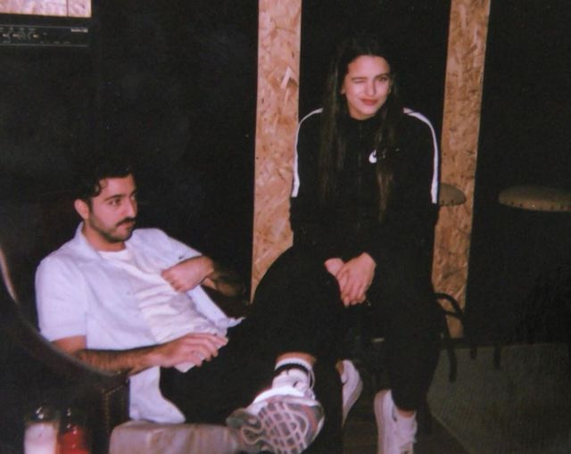
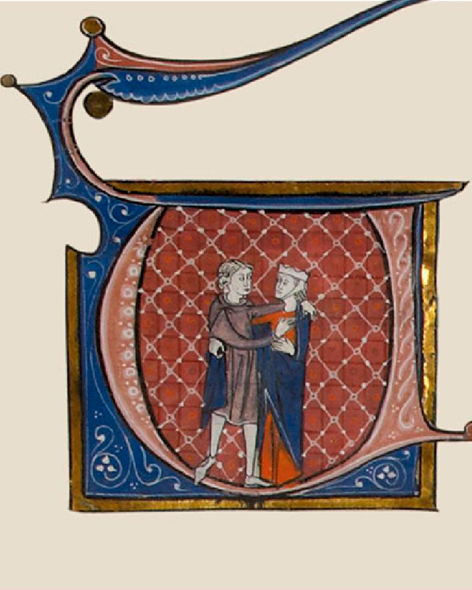

¿Quiénes crearon el álbum?
La cantante Rosalía, en colaboración con el Guincho y otros cantantes, ayudaron en la producción del álbum.
Visita para saber más

¿Cuál fue la inspiración del álbum?
Se basaron en la novela "Flamenca", una obra escrita originalmente en occitano, una lengua romance.
Visita para saber más
¿Cuáles son las canciones del álbum?
En total son 11 canciones, todas cantadas por Rosalía
Visita para saber más